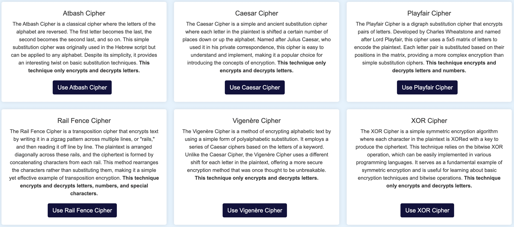
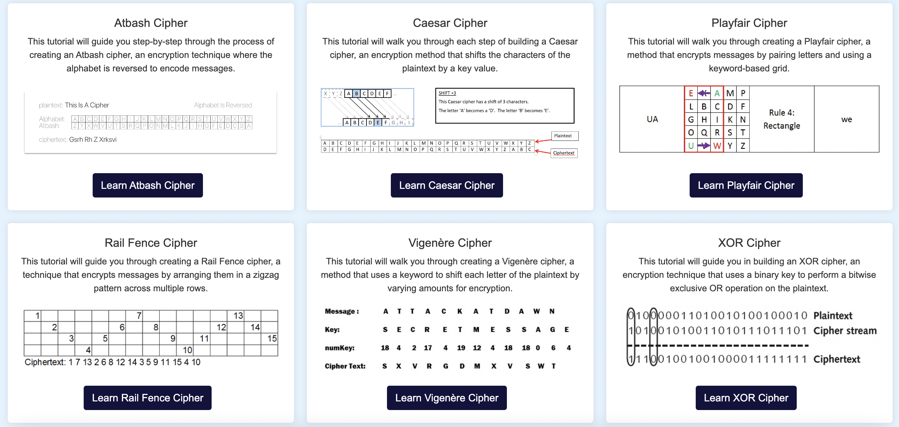
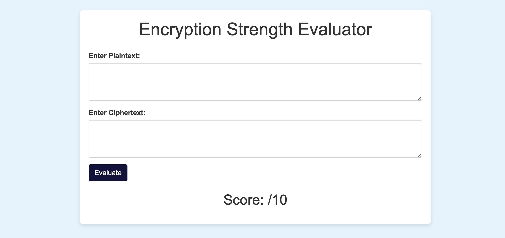

Experiment with different encryption techniques and see how they work in real-time. By testing each method with various inputs, you can observe how they transform data and handle different types of content. This hands-on exploration lets you see the effects of changes to keys or parameters immediately, providing a clearer understanding of how each encryption technique operates. For example, you might watch how a Caesar cipher shifts letters systematically or how a Vigenère cipher adapts to a keyword. Real-time results enhance your grasp of each method's functionality and help you appreciate their unique features.
 Explore LabLearn the basics of cryptography and master the art of encryption with our tutorials. Our comprehensive guides cover fundamental concepts, practical applications, and advanced techniques, providing you with the knowledge to implement and understand various encryption methods. The tutorials are designed to complement the hands-on experiments in our Lab section, teaching you how to develop the encryption techniques you explore there. You will gain the skills needed to build and modify these techniques from scratch, reinforcing your learning and giving you the tools to innovate and experiment further.
 View TutorialsEvaluate the strength of your encrypted data to ensure it meets your security needs. Our Evaluator tool analyzes encrypted text, scores it based on two key criteria, and provides constructive feedback. The first criterion is the complexity of the encrypted data, measured by the variety of unique characters in the ciphertext. The second criterion assesses the similarity between the plaintext and ciphertext. Based on this analysis, you receive detailed feedback that helps you gauge the robustness of your encryption, determining whether it is secure, safe to use, and protected against potential threats.
 Try Evaluator